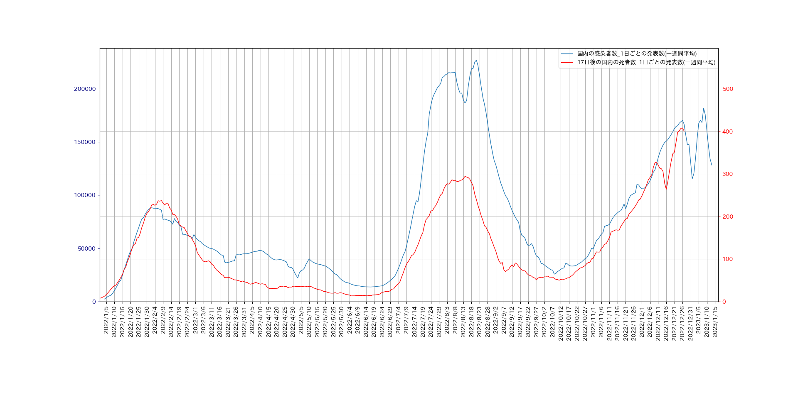

厚生労働省のデータをもとに、第6波以降の1日ごとの感染者数と死者数のグラフを一つにまとめて表示します。
作成したプログラムについては、
ここ
をご覧ください。
データの平滑化
もう少し見やすくするために、日ごとの感染者数と志望者数データを7日間の移動平均を用いて平滑化します。
作成したプログラムについては、
ここ
をご覧ください。
死者数のピークは、新規感染者数のピークのおよそ17日後に訪れるので、死者数のグラフを17日前にずらして、
新規感染者数のグラフと重ねて表示すると、以下のようになります。

作成したプログラムについては、
ここ
をご覧ください。
そこで、上のグラフをもとに日々の致死率を、
\[
\rm t 日の致死率 = \frac{(t+17)日の死亡者数}{t日の新規感染者数}
\]
と近似して求めたものを一日ごとの新規感染者数のグラフとを重ねて表示すると、次のようになります。
作成したプログラムについては、
ここ
をご覧ください。
これを見ると、第7波に較べて第8波になってからの致死率が上がっているのが分かります。
専門家によると、これは感染者の届け出の方法が変わったことが背景にあると見られるとのことです。
すなわち、感染しても軽症の患者は届出をしなくなったことが原因だそうです。
裏付ける資料が望まれるところです。